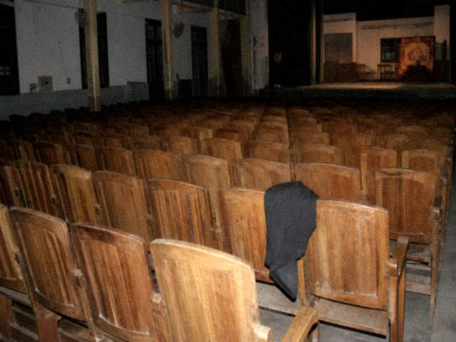

那晚从东七排被叫走，我还以为是坐错了。坐错会换座位，不会换名分。名分写在簿上。簿上有我号。
钱退了百分之七十。百分之三十说是已开锣的手续费。开锣的时候我还在座位上喝水。
茶馆里有人让我别写中邪。我本来也没写。我写的是龙套。龙套两个字比鬼准。
后来没再去槐溪。有人问攻略，我说看须知第四条。第四条比攻略短。
马句比我早。他博客比我写得清楚。清楚也没用，系统照样灰键。
不看戏了

那晚从东七排被叫走，我还以为是坐错了。坐错会换座位，不会换名分。名分写在簿上。簿上有我号。
钱退了百分之七十。百分之三十说是已开锣的手续费。开锣的时候我还在座位上喝水。
茶馆里有人让我别写中邪。我本来也没写。我写的是龙套。龙套两个字比鬼准。
后来没再去槐溪。有人问攻略，我说看须知第四条。第四条比攻略短。
马句比我早。他博客比我写得清楚。清楚也没用，系统照样灰键。
豆皮的窗，〇八年八月二十号补记。茶馆里没写完的，写这儿。写完他很久没上。一三年有人在问答里翻到他，他又上来看了一眼，没改旧文，只在旧文下面多打了这几行。
那晚从东七排被叫走，我还以为是坐错了。坐错会换座位，不会换名分。名份写在簿上。簿上有我号。钱退了百分之七十，十一天以后到的卡，卡短信写的是桐县文旅，摘要栏三个字：票款。百分之三十他们口头说是已开锣的手续费。手续费那张收据我要过，要来的是手写，没有章，经手人写成吴，吴后面空白。开锣的时候我还在座位上喝水。水是客栈灌的，塑料瓶，瓶盖是红的。茶馆里有人让我别写中邪。我本来也没写。我写的是龙套。龙套两个字比鬼准。后来没再去槐溪。有人问攻略，我说看须知第四条。第四条比攻略短。马句比我早。他博客比我写得清楚。清楚也没用，系统照样灰键。我老婆当初不信，说哪有买张票变成跑龙套的。不信也好。信了她要跟我去闹。闹不赢的。那张东七排的票根我还夹在户口本里，夹着也换不回那三成。不换就不换。收据我夹在票根一块儿，一块儿塞户口本。户口本夹层有点潮，潮了字更淡。淡了「吴」后面还是空白。空白我后来用铅笔自己标了个窗字，标了也不算章。不算就那三成。三成不多。不多也气。气完这窗就停在这儿。